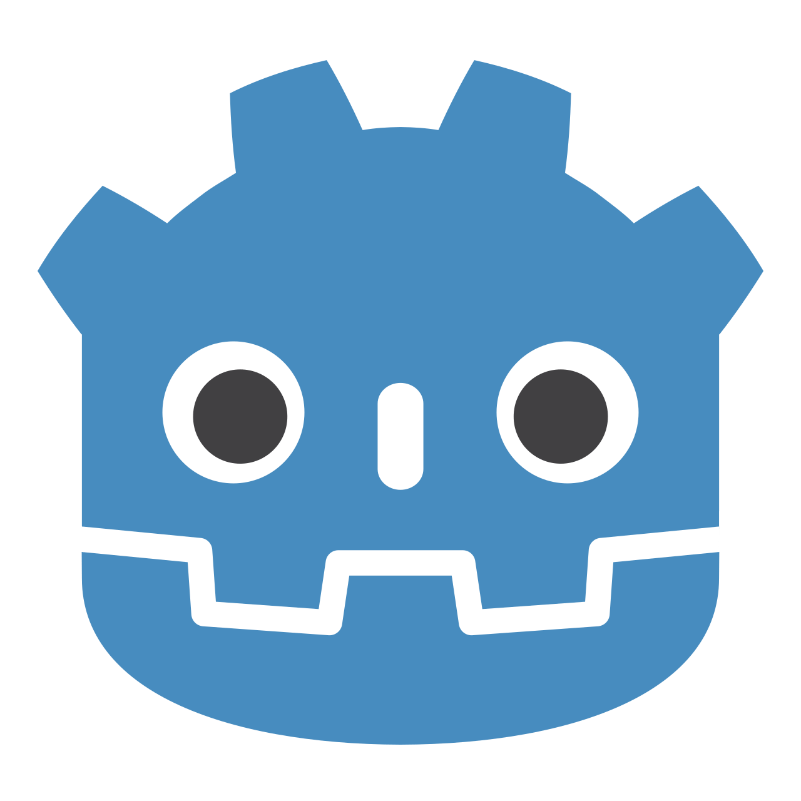

Goal 3 / Develop foundational skills within the Godot Engine
Having developed an interest in game development, I set out to expand my programming knowledge base beyond that provided through my university studies. The Godot game engine appealed to me as a free, accessible way to begin in the field of game development compared to its alternatives, and its language, GDScript, appeared to be approachable and relatively simple to understand given my existing programming experience. Although I already had some, albeit minimal, introductory experience with the engine, I lacked confidence in independently applying programming concepts and navigating its development environment.
Rather than simply becoming familiar with the features available within Godot, I wished to develop the practical experience needed to independently create a functional game. As such, I committed myself to:
Overall, these activities would allow me to build upon my existing introductory knowledge and develop greater confidence working with Godot and GDScript.
Sigh. Maybe I should know what I want to do more by now